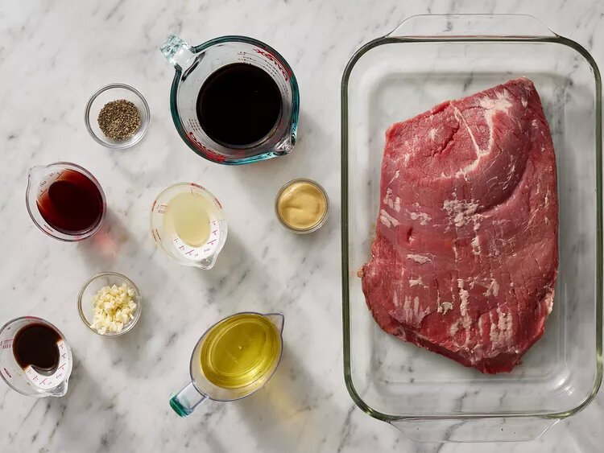
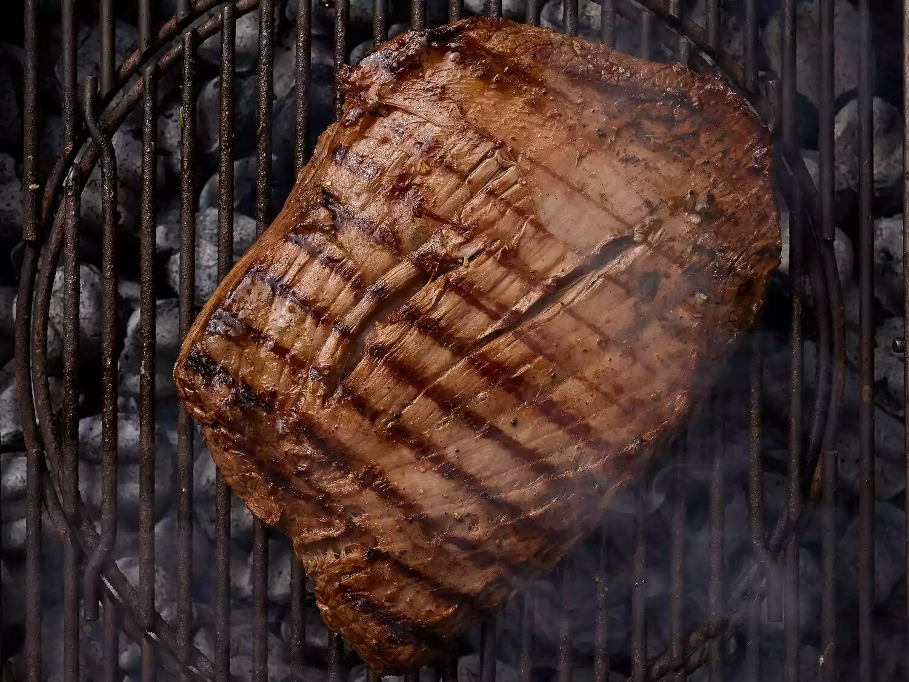

Cowboy Stew recipe

Description
This easy cowboy stew recipe is hearty and filling with kielbasa sausage,
cumin, chiles, and chili powder for some Southwest appeal.
It's quick and easy to make on the stovetop
but tastes best when simmered all day in a crockpot.
Serve with cornbread and a simple green salad.
Ingredients
- 2 pounds ground beef
- 2 pounds kielbasa sausage, sliced into 1/2 inch pieces
- 1 medium onion, chopped
- 2 cloves garlic, chopped
- 4 cups water
- 2 (15.2 ounce) cans whole kernel corn, with liquid
- 2 (15 ounce) cans pinto beans, with liquid
- 2 (14.5ounce) cans peeled and diced tomatoes, drained
- 1 (14.5 ounce) can diced tomatoes with green chile peppers, with liquid
- 1 (10 ounce) package frozen mixed vegetables
- 4 medium baking potatoes, peeled and diced
- 2 teaspoons ground cumin
- 2 teaspoons chili powder
- salt and pepper to taste
steps
-
Whisk together oil, soy sauce, vinegar, lemon juice,
Worcestershire sauce, Dijon mustard, garlic, and pepper for
marinade until thoroughly combined. Place steak in a 9x13-
inch glass baking dish.

-
Pour marinade over flank steak in the baking dish;
turn several times to coat thoroughly with marinade.
Cover, and refrigerate for 2 to 6 hours, or up to 12 hours if you have time.

-
When ready to cook, preheat an outdoor grill for medium-high
heat and lightly oil the grate.

-
Remove steak from the marinade and shake off excess.
Discard the remaining marinade.
-
Cook steak on the preheated grill for about 5 minutes per side,
or to desired doneness.

-
Remove from the grill and let rest for 5 minutes before
slicing and serving.
-
Serve hot and enjoy!
 li*5
li*5